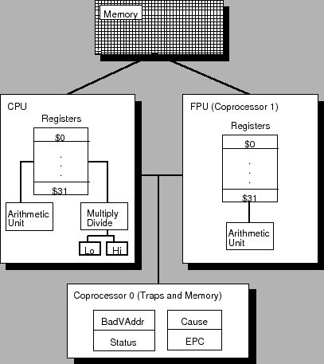

Description of the MIPS R2000
Figure:
MIPS R2000 CPU and FPU
|  |
A MIPS processor consists of an integer processing unit (the CPU) and
a collection of coprocessors that perform ancillary tasks or operate
on other types of data such as floating point numbers (see
Figure ![[*]](../../../usr/share/latex2html/icons/crossref.html) ). SPIM simulates two coprocessors. Coprocessor
0 handles traps, exceptions, and the virtual memory system. SPIM
simulates most of the first two and entirely omits details of the
memory system. Coprocessor 1 is the floating point unit. SPIM
simulates most aspects of this unit.
). SPIM simulates two coprocessors. Coprocessor
0 handles traps, exceptions, and the virtual memory system. SPIM
simulates most of the first two and entirely omits details of the
memory system. Coprocessor 1 is the floating point unit. SPIM
simulates most aspects of this unit.
Subsections
Ian Moor
2009-03-11